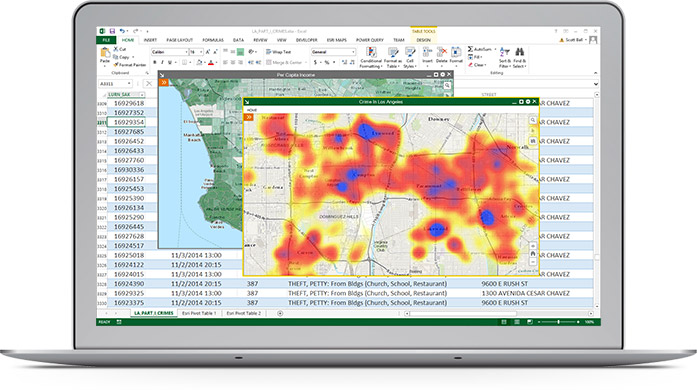

首页
产品技术
行业应用
客户支持
教育培训
下载中心
关于我们
产品技术
ArcGIS
ENVI/IDL
综述
平台产品
平台能力
应用场景
f
部署
新特性
ArcGIS10.7
试用
版本生命周期
ArcGIS是您通往智慧决策、高效工作、智能管理的第一步，因为每一个问题或者场景都跟地理位置有关。
使用ArcGIS让您的数据开启地理的视角，释放空间位置的价值
使用包含了准确、权威的数据制作成的地图来进行决策，您可以直观动态的看到资源分布、人员组成、事态发展……
同样利用地图，ArcGIS也可以为您向组织机构的其他人或者公众呈现各种复杂的政策决定。
地图让您既可以查看全局，胸有成竹，又可以让您聚焦局部，分析问题，重点关注可能会影响组织机构的业务的任何关键环
节，
用接入了实时数据的地图来了解您的资产状况，发现以前可能没有发现的问题。
如果您的工作是为他人提供信息，这些信息可以用来节省金钱和时间，甚至是挽救生命，那么您更需要以科学的精神来工作。
ArcGIS就是这么一个专业而科学的工具，利用时效性好、准确性高的数据执行分析，并将分析结果分享给需要的每一个人。

您还在忽视您手头的各种数据吗？它们其实隐含着很多秘密！发掘它们！利用它们！让它们更好的为您的业务流服务！
ArcGIS提供了丰富的数据分析和可视化工具，让您为组织机构的智慧决策做出更多。
无需开发就可以将ArcGIS提供的地图和空间分析工具集成到组织机构已有的业务系统中，可以使用您的组织机构的政策和需要来部署ArcGIS，以保证
系统的安全性和数据的完整性。 ArcGIS可以部署在云端，或者本地的环境中，以及混合部署。